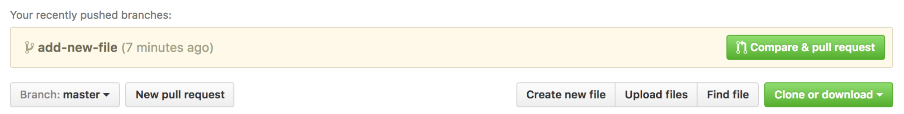
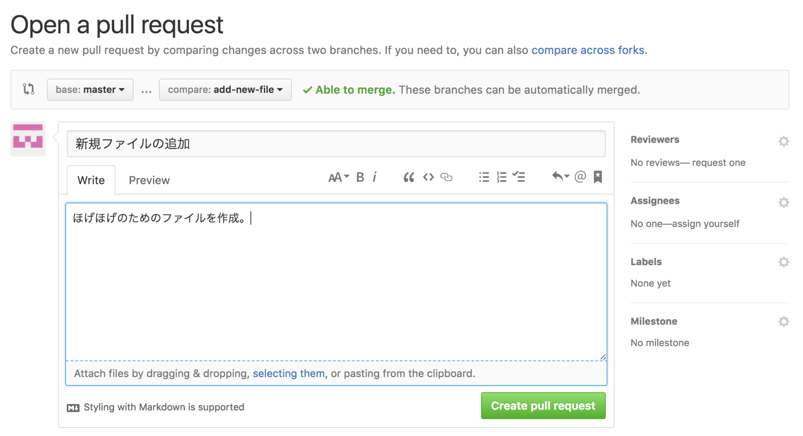
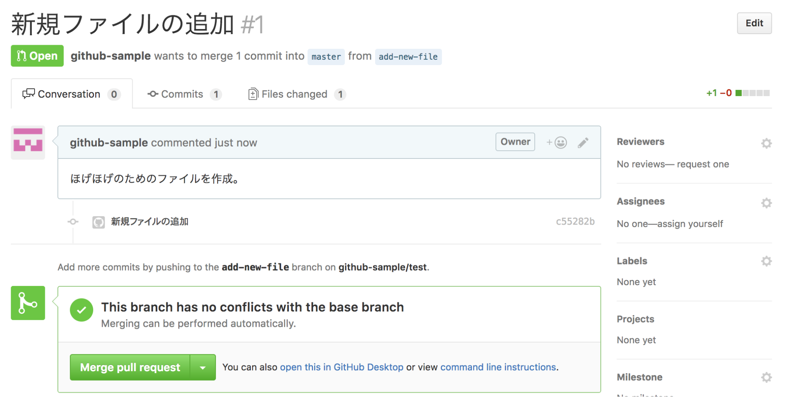

基礎知識として説明したように、GitHubはソースコードを通じて開発者がコミュニケーションできることが特徴で、プルリクエスト（pull request）はそのための機能です。
GitHubの画面からプルリクエストを出してみましょう。「Compare & pull request」もしくは「New pull request」をクリックします。
新たにコミットした add-new-file ブランチから、 master ブランチへ向けてプルリクエストを送るため、「base」（リクエスト受信側）が「master」ブランチ、「compare」（リクエスト送信側）が「add-new-file」ブランチとなります。
プルリクエストのタイトルと、内容を記載します。内容には、これが何のためのどんな修正なのか、確認できる環境やチケット情報など、必要な情報を詳しく書きましょう。
記載できたら「Create pull request」をクリックします。以上の手順で、プルリクエストのページが作成されます。
このURLを、プルリクエストを確認してもらいたい開発者や、動作確認をしてもらいたい関係者などに伝えます。